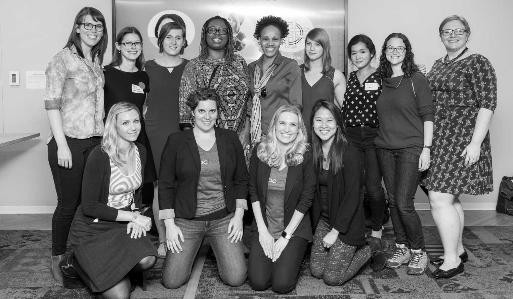

<div class="about clearfix">
<div class="about-inner-wrapper">
  <div class="clearfix"><h2>About <br> Jessica Bell</h2></div>
  <div class="two-thirds-wrapper">
    
  </div>
  <div class="one-third-wrapper">
    <p>Jessica Bell works as a developer for The Washington Post, primarly on front end and JavaScript projects. She holds a degree in International Relations from San Fransisco State.  Jessica sits on the leadership teams for DC Tech Meetup and DCFemTech and is an active member of Women Who Code DC.  She teaches at General Assembly throughout the year classes helping people learn the basics of code and web development. Her current project is DC Tech Stories, a podcast about local tech workers. </p>
  </div>
  </div>
</div>